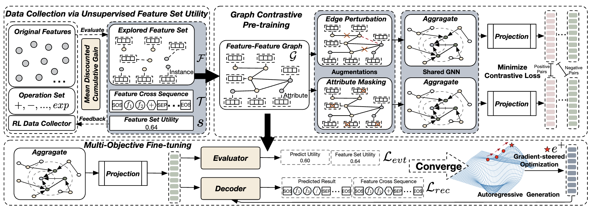
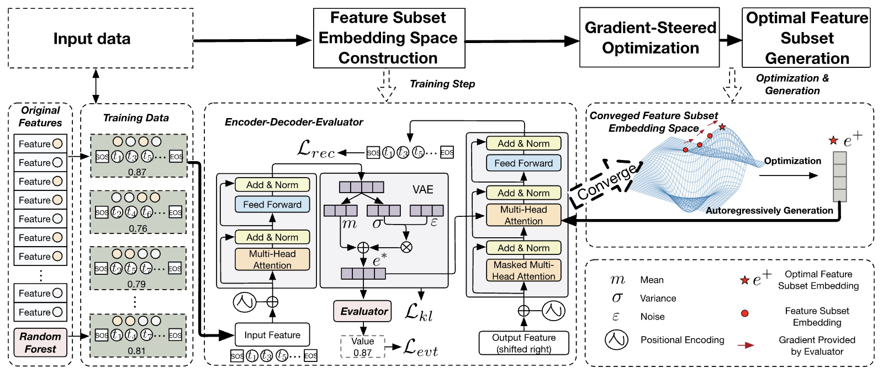

|
Wangyang Ying I'm a Ph.D. student at Arizona State Univeristy in Tempe, advised by Prof. Yanjie Fu. I earned my Bachelor's and Master's degrees from Sichuan University in 2016 and 2019, respectively, under the supervision of Prof. Lei Zhang. After my Master's, I worked at Alibaba and Tencent, focusing on video recommendation algorithms and News search algorithms, respectively. In 2023, I started my Ph.D. at ASU, and during my studies, I interned at ASTAR, Singapore, advised by Liangli Zhen. My research interests include data mining, machine learning, and interdisciplinary applications. Currently, I focus on Data-Centric AI, learning from unlabeled data, and AI for scientific discovery. |

|
News[2025-03] I will join NEC lab, Princeton as a research intern during the summer (May–August 2025). [2024-12] One paper has been accepted by AAAI 2025. [2024-12] One paper has been accepted by ACM TIST. [2024-08] One paper has been accepted by ACM TKDD. [2024-07] Two papers have been accepted by CIKM 2024. [2024-05] One paper has been accepted by KDD 2024. |
Work Experience[05/2024~08/2024] Research Intern, Institute of High Performance Computing, A*STAR, Singapore. [11/2020~08/2022] Full Time, Platform and Content Group, Tencent, Beijing. [06/2019~10/2020] Full Time, Digital Media & Entertainment Group, Alibaba, Beijing. |
Service● ICLR The International Conference on Learning Representations (2024). ● KDD The ACM SIGKDD Conference on Knowledge Discovery and Data Mining (2024, 2025). ● ICML International Conference on Machine Learning (2025). ● CIKM The Conference on Information and Knowledge Management (2023, 2024). ● TKDD ACM Transactions on Knowledge Discovery from Data. ● TKDE IEEE Transactions on Knowledge and Data Engineering. ● BigData The IEEE International Conference on Big Data (2023, 2024). |
Teaching Experience[01/2025~05/2025] Teaching Assistant for CSE 572 - Data Mining [08/2024~12/2024] Teaching Assistant for CSE 572 - Data Mining |
Selected Publications* Denote equal contribution |
|

|
Unsupervised Generative Feature Transformation via Graph Contrastive Pre-training and Multi-objective Fine-tuning
Wangyang Ying, Dongjie Wang, Xuanming Hu, Yuanchun Zhou, Charu C. Aggarwal, Yanjie Fu KDD, 2024 (Paper) We propose an unsupervised feature transformation learning (UFTL) framework that integrates graph contrastive learning and multi-objective fine-tuning to enhance feature set quality. It formulates feature transformation as a measurement-pretrain-finetune paradigm, where a feature set is represented as a feature-feature interaction graph, pre-trained using contrastive learning, and optimized via a deep generative model to construct more effective transformed features, particularly benefiting applications like material performance screening. |
|

|
Feature Selection as Deep Sequential Generative Learning
Wangyang Ying, Dongjie Wang, Haifeng Chen, Yanjie Fu TKDD, 2024 (Paper) We propose a feature selection approach by framing it as a deep sequential generative learning task. The method utilizes a variational transformer-based encoder-decoder-evaluator framework to embed feature selection knowledge into a continuous space, enabling efficient gradient-based optimization and autoregressive generation of optimal feature subsets without relying on large discrete search spaces or extensive hyperparameter tuning. |
|
|
Revolutionizing Biomarker Discovery:
Leveraging Generative AI for Bio-Knowledge-Embedded
Continuous Space Exploration
Wangyan Ying, Dongjie Wang, Xuanming Hu, Ji Qiu, Jin Park, Yanjie Fu CIKM, 2024( Paper) We introduce a generative AI-based framework for biomarker discovery by embedding biomarker identification knowledge into a continuous space. It employs an encoder-evaluator-decoder structure to optimize biomarker selection through gradient-based search and autoregressive sequence generation, improving efficiency and robustness in high-dimensional, low-sample-size biological datasets. |
|
Self-optimizing Feature Generation via Categorical Hashing Representation and Hierarchical Reinforcement Crossing
Wangyang Ying*, Dongjie Wang*, Kunpeng Liu, Leilei Sun, Yanjie Fu ICDM, 2023 (Paper) We introduce a self-optimizing feature generation framework that integrates categorical hashing representation with hierarchical reinforcement feature crossing. It optimizes feature generation by leveraging hashing-based discretization to enhance robustness against outliers and reinforcement learning to discover meaningful feature interactions, efficiently navigating the search space for improved downstream predictive performance. |
|
|
Neuro-Symbolic Embedding for Short and Effective Feature Selection via
Autoregressive Generation
Nanxu Gong*, Wangyan Ying*, Dongjie Wang, Yanjie Fu TIST, 2025( project page / Paper) We propose a neuro-symbolic generative framework for feature selection, embedding feature subset knowledge into a continuous space using an encoder-decoder-evaluator model. The method emphasizes orthogonality by ensuring that selected features are both effective and minimally redundant. A gradient-based search strategy is employed to optimize feature subsets, enhancing generalizability and improving downstream model performance. |

|
Evolutionary Large Language Model for Automated Feature Transformation
Nanxu Gong, Chandan K Reddy, Wangyang Ying, Haifeng Chen, Yanjie Fu AAAI, 2025 ( project page / Paper) We propose an evolutionary large language model (LLM) framework for automated feature transformation. By integrating LLMs with evolutionary algorithms, the method formulates feature transformation as a sequential generation task, leveraging few-shot prompting and multi-population evolutionary search to efficiently optimize feature transformations while balancing general and task-specific feature knowledge. |